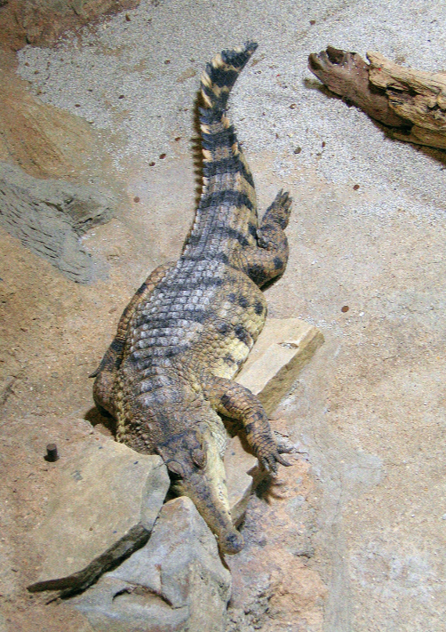

Uvrstitev
Kače (znanstveno ime Serpentes) so mesojedi plazilci brez okončin, ki jih uvrščamo v kraljestvo živali (ANIMALIA) , spadajo v deblo strunarjev (CHORDATA) , prav tako v razred plazilcev (SAUROPSITA), v red luskarjev (SQUAMATA), ter vpodred kač (SERPENTER) , torej so sorodne kuščarjem, krokodilom in želvam.

Kuščarjem

Krokodilom